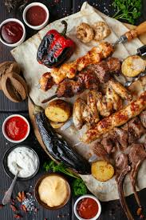
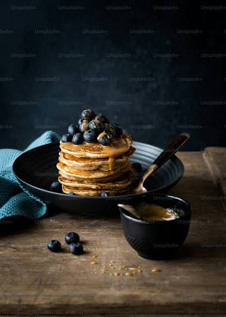
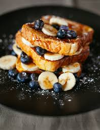

حلويات
وصفات مجربة في بيتنا، مكتوبة خطوة بخطوة، من المطبخ الشامي وحلويات الأعياد والمشروبات الصيفية.
تصفح الوصفات

وصفة بيتية تحتاج صبرًا قليلًا، والنتيجة أرز معطّر وفاخر على طبق واحد. جربها في عزومة الجمعة.



لا توجد وصفات تطابق بحثك. جرّب كلمة أخرى.
بدأت مذاق من دفتر وصفات قديم كانت تكتب فيه الجدّة مقاديرها بالعين. أجرّب كل وصفة في مطبخي أكثر من مرة قبل نشرها، وأكتبها بالكيلو والكوب والملعقة حتى تنجح معك من أول مرة.